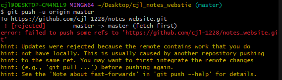
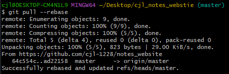
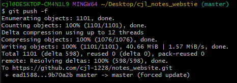

陳杰龍的筆記網站
陳杰龍的筆記網站 主頁
主頁 歸檔
歸檔 分類
分類 其他
其他 關於我
關於我 【狀況題】怎麼有時候推不上去…
【狀況題】怎麼有時候推不上去…
偶爾在執行 Push 指令的時候會出現這個錯誤訊息：
這段訊息的意思是線上版本的內容比你電腦裡這份還要新，所以 Git 不讓你推上去。
怎麼造成的？
通常這個狀況會發生在多人一起開發的時候，想像一下這個情境：
1. Sherly 跟 Eddie 兩個人在差不多的時間都從 Git Server 上拉了一份資料下來準備進行開發。
2. Sherly 手腳比較快，先完成了，於是先把做好的成果推一份上去。
3. Eddie 不久後也完成了，但當他要推上去的時候發現推不上去了…
怎麼解決？
第一招：先拉再推
因為你電腦裡的內容是比較舊的，所以你應該先拉一份線上版本的回來更新，然後再推一次：git pull --rebase

這裡加了 --rebase 參數是表示「內容抓下來之後請使用 Rebase 方式合併」，當然你想用一般的合併方式也沒問題。合併如果沒發生衝突，接著應該就可以順利往上推了。
第二招：無視規則，直接把內容蓋掉
凡事總有先來後到，在上面的例子中，Sherly 先推上去的內容，後推的人就是應該拉一份下來更新，不然照規定是推不上去的。不過這規則也是有例外，只要加上了 --force 或是 -f 參數，它就會強迫硬推上去，把 Sherly 之前的內容蓋掉：
雖然這樣一定會成功，但接下來你就要去面對 Sherly，跟她解釋為什麼你把她的進度蓋掉了。